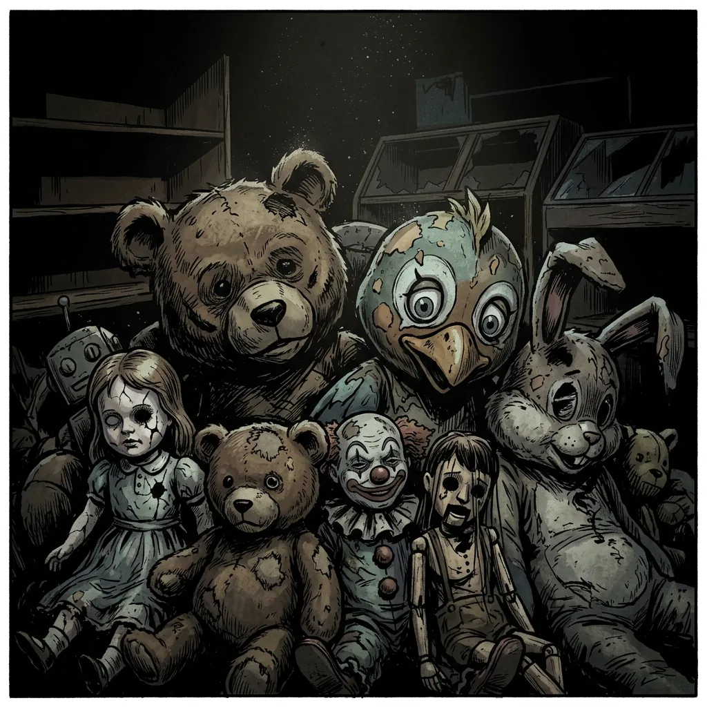
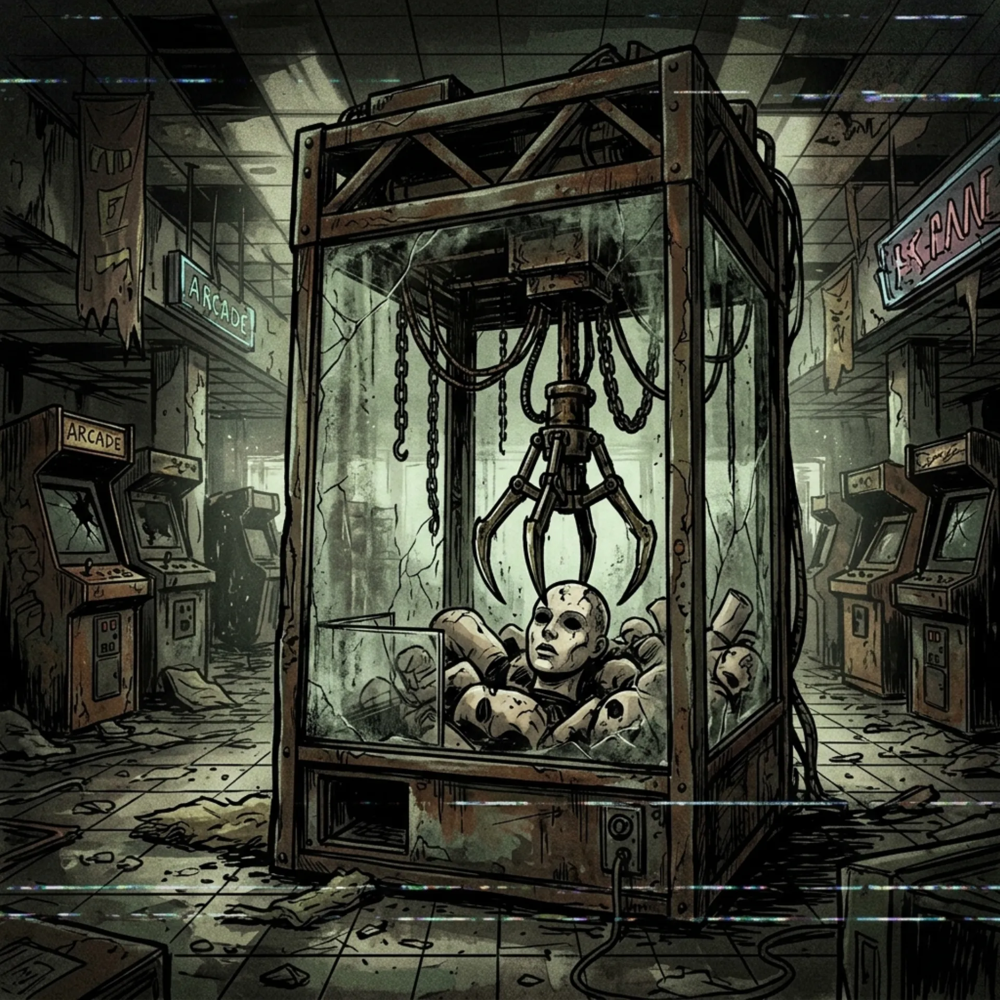
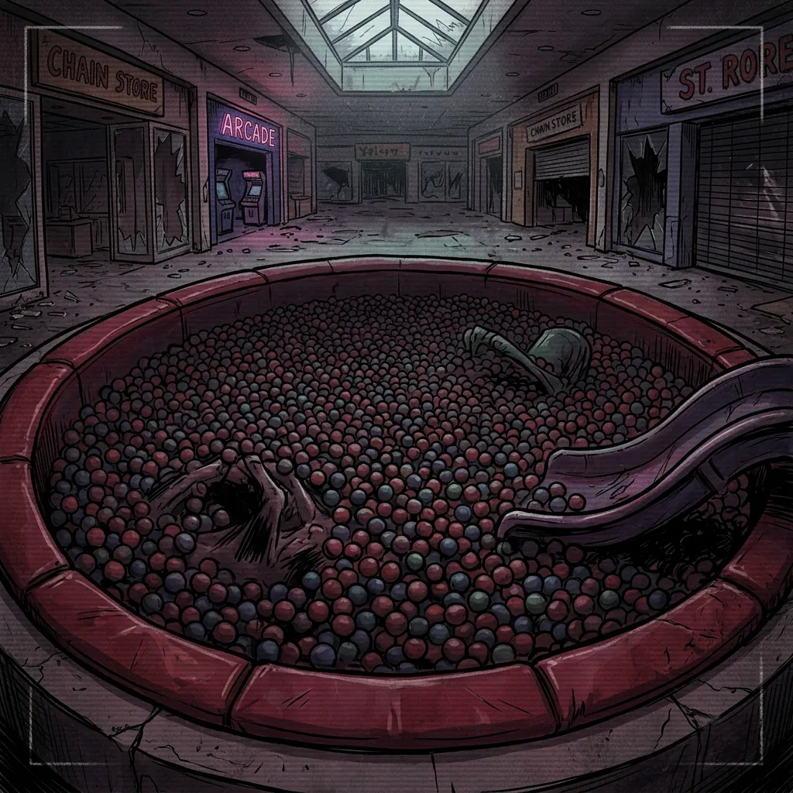

Изолятор (Отдел игрушек)
Если вы видите, что «игрушки» (Аниматоры Уровня 1) прижались друг к другу слишком плотно — не вмешивайтесь. Им просто холодно. Бракованные партии ожидают утилизации вместе.
Этот адрес зарезервирован для персонала. Вернитесь к гостевой странице ТЦ.
Открыть ТЦ «Детский Жир»Торговая точка выполняет функцию финальной сортировки, депривации и упаковки отработанного материала перед отправкой на склад. Поддержание иллюзии «волшебного магазина» критически важно для стабилизации уровня сахара в крови объектов.



Если вы видите, что «игрушки» (Аниматоры Уровня 1) прижались друг к другу слишком плотно — не вмешивайтесь. Им просто холодно. Бракованные партии ожидают утилизации вместе.
Избегайте нахождения под стеклянным куполом. Механизм находится на перекалибровке. Прямо сейчас клешня ищет новую голову для манекена из третьей секции.
Плотный слой пластиковых шариков идеально глушит звуки. Следите за тем, чтобы погруженные субъекты не всплывали до полного извлечения эссенции.
Спасибо, что выбрали Администрацию. Мы вас любим!